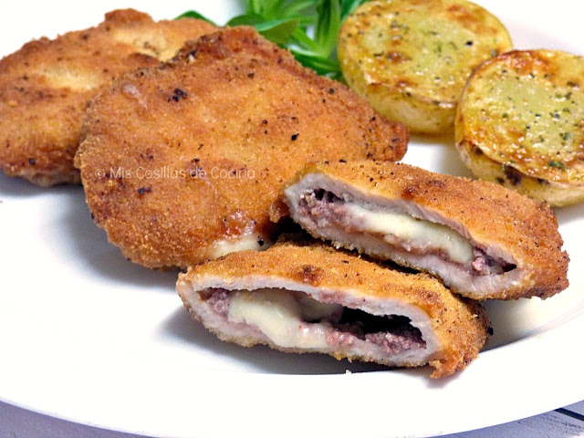

Libritos de lomo rellenos de jamón y queso

Ingredientes:
- 8 filetes de lomo de cerdo
- 16 lonchas de jamón serrano
- 8 lonchas de queso
- Harina
- Huevo
- Pan rallado
- Aceite de oliva
- Sal
Tiempos:
- Preparación: 20 minutos
- Freir: 20 minutos
- Total: 40 minutos
Preparación:
- Colocar los filetes de lomo entre dos láminas de plástico y aplastarlos con un mazo hasta que queden finos y parejos.
- Salar los filetes al gusto.
- Colocar una loncha de jamón y una de queso sobre cada filete.
- Enrollar cada filete de manera que el jamón y el queso queden en el interior y sujetarlos con un palillo.
- Pasar los libritos por harina, huevo batido y pan rallado.
- Calentar abundante aceite de oliva en una sartén y freír los libritos hasta que estén dorados por ambos lados.
- Retirar los palillos antes de servir.